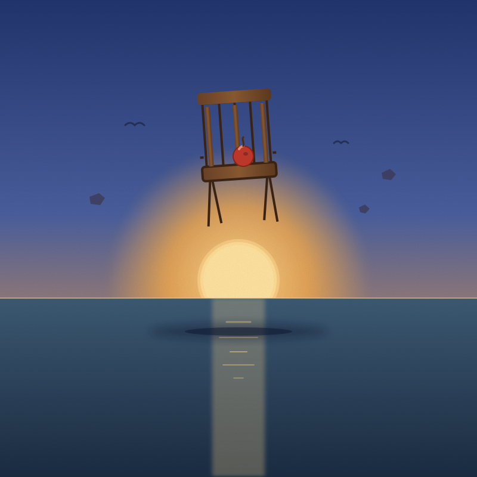
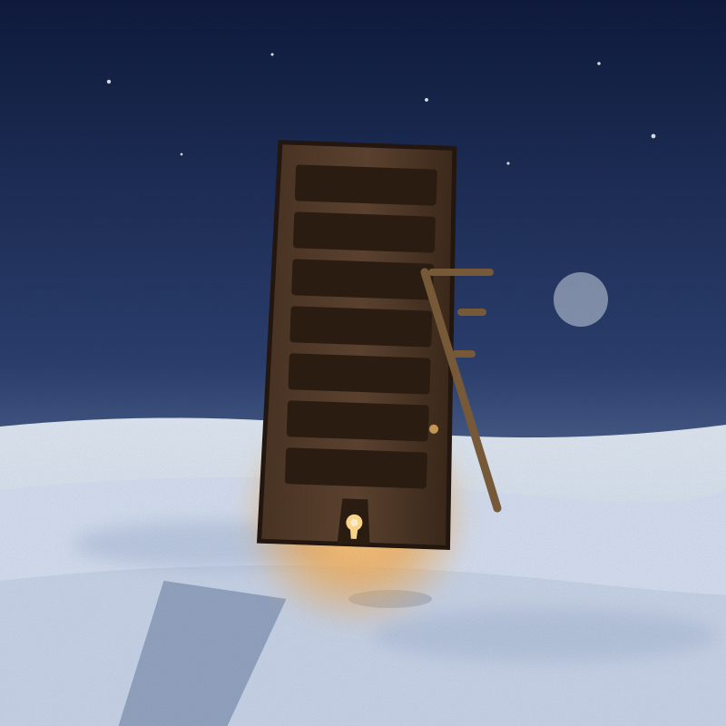
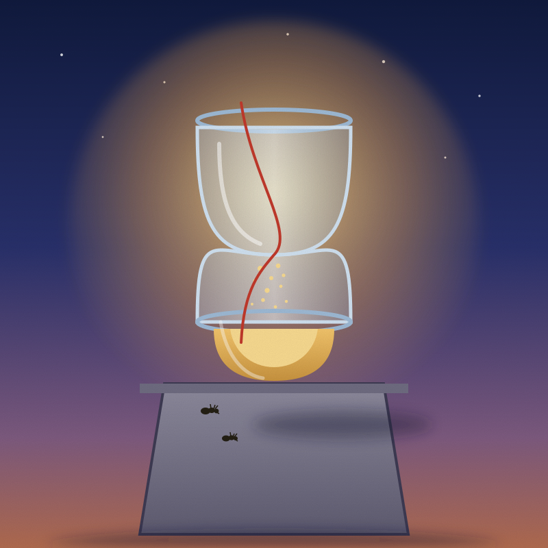
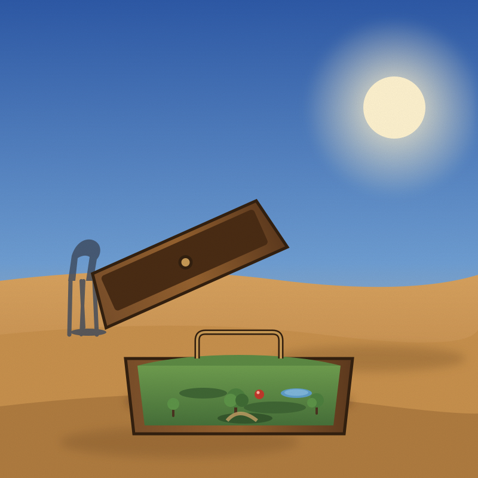
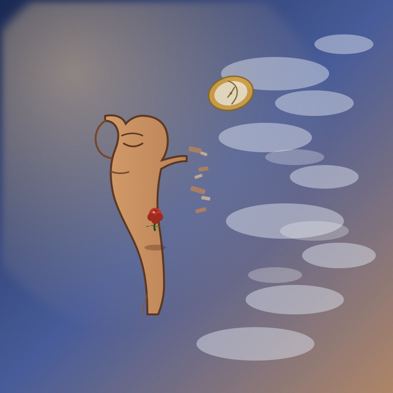
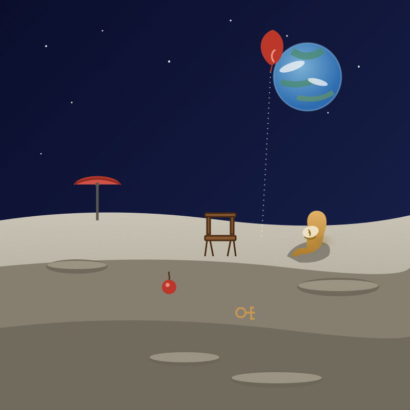
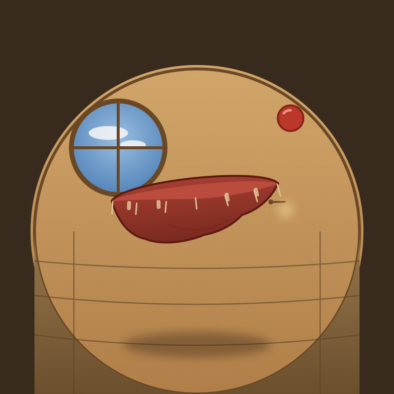
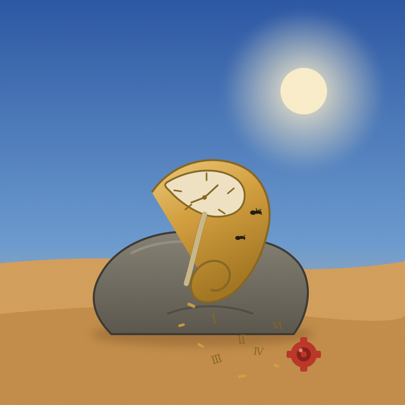
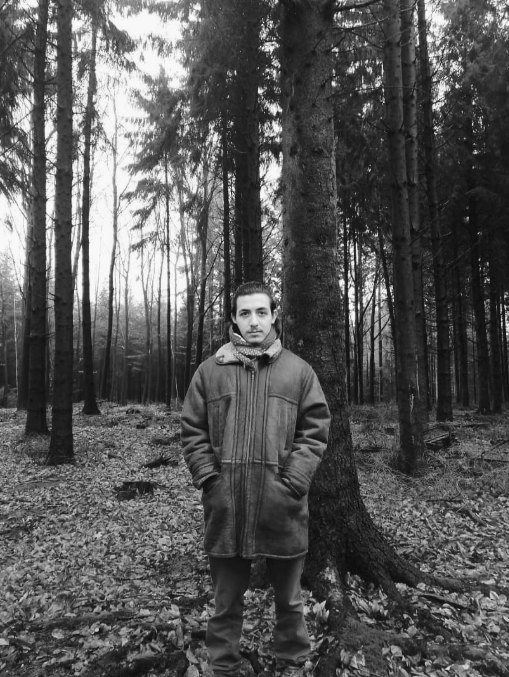

Surrealist painter — est. 2012
Andreas
Krings
A world where gravity is optional.
01 — Selected Works
Works
-

No. 01 The Weight of Floating 2025 The Weight of Floating
-

No. 02 A Door for Winter 2021 A Door for Winter
-

No. 03 Memory of a Blue Hour 2019 Memory of a Blue Hour
-

No. 04 The Garden That Moved Away 2022 The Garden That Moved Away
-

No. 05 Portrait of an Hour 2023 Portrait of an Hour
-

No. 06 Things the Moon Forgot 2020 Things the Moon Forgot
-

No. 07 A Room Without Corners 2024 A Room Without Corners
-

No. 08 The Clock That Sheds Its Hours 2018 The Clock That Sheds Its Hours
02 — Profile
About

Andreas Krings is a surrealist painter working in Berlin. His canvases take the ordinary — a chair, a suitcase, an hourglass — and set it adrift in a world where the rules of light, weight, and time no longer apply. Each painting begins as a small ink drawing and grows slowly, over months, in thin layers of oil.
He has exhibited across Asia and Europe since 2012. His work sits in collections in Berlin, Osaka, London, and New York.
“I don't paint impossible things. I paint things remembering that they are possible.”
Selected Exhibitions
- 2026FotoshootingBerlin
- 2025The Weight of FloatingKitsune Gallery · Berlin
- 2024Rooms Without CornersFreja Raum · Berlin
- 2023Things the Moon ForgotKunsthalle Berlin
- 2022A Garden That Moved AwayGalleria Vek · Milan
- 2021Blue HoursFushimi Hall · Osaka
Oil on canvasCharcoal on paperInk on paper
03 — Contact
Say hello.
Lichtenberg, Berlin
Visits by appointment
Kitsune Gallery, Berlin
kitsunegallery.jp ↗